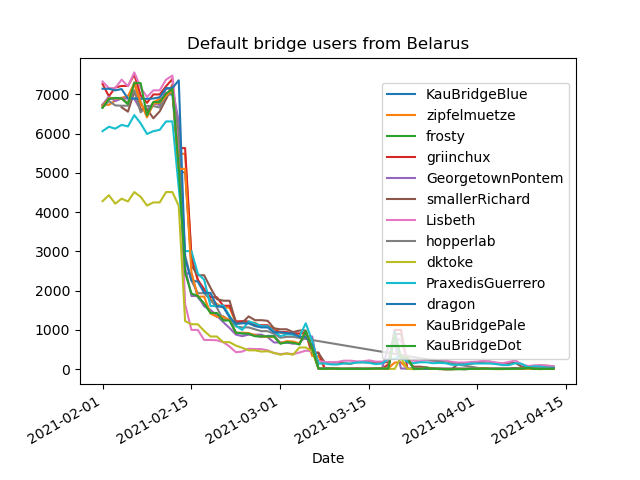
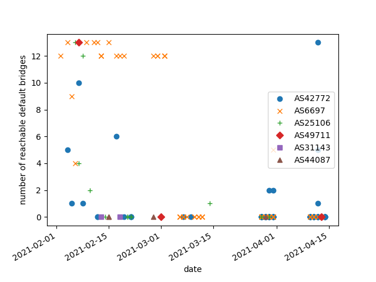
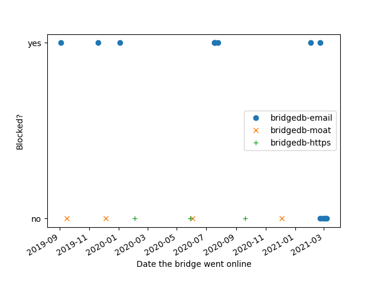

| Ник | Пост | Дата | ||||||||||||||||||||||||||||
|---|---|---|---|---|---|---|---|---|---|---|---|---|---|---|---|---|---|---|---|---|---|---|---|---|---|---|---|---|---|---|
| tango | While I was looking at the recent shift in bridge users, I noticed a case of apparent Tor blocking in Belarus on about 2020-10-13 that I don’t think has been previously discussed. There was a sudden, one-day drop in direct relay users (users not using a pluggable transport, just connecting to public Tor relays), and a simultaneous increase in obfs4 users. This is a commonly observed effect: direct Tor blocking causes people to enable pluggable transports. | 2021-02-22T17:18:27.541Z | ||||||||||||||||||||||||||||
| somedude | Looks like torproject.org and *.torproject.org banned now in Belarus. | 2021-03-28T11:49:53.696Z | ||||||||||||||||||||||||||||
| tango | What ISP is it, if you don’t mind saying? To access torproject.org downloads, you can use a mirror site. The main page that lists mirrors at torproject.org is blocked, but you can access it other ways: | 2021-03-28T17:26:16.729Z | ||||||||||||||||||||||||||||
| somedude |
Tested with “Beltelecom”, “A1” and “Life:)” | 2021-03-28T22:02:42.676Z | ||||||||||||||||||||||||||||
| cohosh | Reposing here some investigation we did into the blocking of Tor in Belarus. Link to original report: reports/2020/belarus/2020-belarus-report.md · main · The Tor Project / Anti-censorship / censorship-analysis · GitLab Tor blocking events in Belarus from 2020-2021Date: 21 April 2021Following the presidential election in 2020 and amid ongoing protests, Belarus has been ramping up their Internet censorship efforts by using increasingly sophisticated methods to block access to anti-censorship tools. We first detected blocking of the Tor network in Belarus in August of 2020, occurring alongside widespread Internet shutdowns. This initial period of blocking was short-lived and connectivity to the Tor network was returned a few days later. Then, in October of 2020, Belarusian censors undertook a renewed effort to block access to Tor. This consisted of blocking access to Tor relays and directory authorities. Starting in February of 2021, we saw increasingly sophisticated enumeration and blocks of Tor’s bridges and bridge distribution infrastructure. In most places, censorship is not consistent across different ISPs or autonomous systems. We have data for the following ASes in Belarus, listed here along with their organization name (according to the latest whois data):
Blocking Tor relaysOur usage metrics data of directly connecting users to the Tor network is an early indicator that a region is blocking access to Tor. We typically see a drop in directly connecting users from the region that corresponds with a rise in users that connect to Tor through bridges. Around August 9th, 2020 the number of directly connecting Tor users dropped significantly, and the number of bridge users rose to more than six times the previous count. Usage counts returned to their previous normal levels on August 11th and remained steady for several months, until renewed efforts to block Tor started in October of 2020. Here we saw the number of directly connecting users plummet and again a rise in bridge users, that continues to the time of writing this report. Blocking the Tor directory authorities and the fallback directories will effectively prevent new users (or users with an expired guard) from downloading the Tor consensus, but so will the complete blocking of all Tor relays. We noticed an attempt to enumerate and block access to all Tor relays and kept their block list relatively up to date with the current consensus. A volunteer ran reachability scans of the entire Tor consensus from within the A1 ISP’s space on two different days, February 25th and March 3rd, to measure how agile the censor was at updating their Tor relays block list. Of the 6647 relays in the public Tor consensus on February 25th, 6647 of connection attempts to these relays from the A1 ISP in Belarus timed out with an error consistent with the blocking pattern described below. On March 3rd, 6966 out of 7064 relays in the consensus timed out. As expected, there was some churn as new relays joined the network and old relays dropped off. There were a total of 952 relays that were present in the March 3rd consensus but not present in the February 25th consensus. These relays may have been new, or they may have been existing relays that were just not online at the time of our first measurement on February 25th. Of these emergent relays, all but one timed out when a direction connection attempt was made. We are omitting the packet captures from our volunteer for privacy reasons, but they did provide us some insight on the blocking mechanism used. Failed connections to blocked bridges and relays shared the following pattern: where it appears that the final ACK in the TCP handshake is being dropped, causing the client to eventually give up on the connection. This resulted in an SSL error in our logs which at first led us to believe the blocking was occurring at the TLS layer, but closer inspection shows us that the TCP handshake is never completed due to the missing final ACK packet. Blocking Tor websitesAccording to OONI data from August 2020 to now, https://torproject.org appears to have been reachable until more recently. There were successful connections to the Tor Project website from Beltelecom until late February, and the last successful connection from A1 was in late October. It’s hard to pinpoint the precise times during which https://torproject.org was unreachable, but it appears likely that the website is currently blocked in Belarus. Blocking Default BridgesTor distributes bridges (non-public relays) to users in censored regions through a variety of different distribution methods. The first line of anti-censorship for many are the default bridges hard-coded and shipped with Tor Browser. Our default bridges are specifically selected for their reliability and capacity to handle large volumes of user traffic. We ship default bridges for two different transports: obfs4 and meek in Tor Browser. In February, we witnessed a sudden decrease in the number of connections from Belarus to our default obfs4 bridges, and a switch in our transport usage from being majority obfs4 to the built-in meek bridge, that was likely a result of our default obfs4 bridges getting blocked.  Looking at OONI data of the reachability of our default bridges by ISP, we see that reachability varies by autonomous system (AS), but the reachability of our default bridges in all major ASes drops in February and March. There is an initial drop in reachability for most ASes that occurs in the first half of February that corresponds with our usage metrics of default bridges above. This is followed by a drop in the reachability of default bridges from AS6697 in early March that corresponds to a drop of our default bridges usage metrics to zero.  Each mark in the above plot corresponds to a single OONI test, with the shape and colour of the marker determined by the AS from which the test was run. Note that while there are many reasons for why a single connection to a default bridge might fail, there is a clear drop in the reachability of bridges from all ASes in Belarus during February and March. BridgeDB EnumerationWe also saw an attempt to enumerate and block bridges that we distribute from BridgeDB. BridgeDB responds to user requests for bridges over three separate distribution channels:
The bridges in our database are partitioned such that any one bridge is only ever handed out over a single distribution channel. A volunteer performed reachability tests for a random selection of both vanilla and obfs4 bridges from each distribution channel throughout the months of February, March, and April. We found that only obfs4 bridges distributed by email were blocked. Access to bridges is limited by time and the requester’s email address, meaning that the bridges a user receives is determined by hashing the user’s email address with the current time interval (time intervals are defined at a granularity of 1 hour). To enumerate all of the bridges in this distribution channel, the censor would have had to repeatedly send requests for more bridges over the course of several hours, or possible from several email addresses. The enumeration of this channel appears thorough. We tested a total of thirteen email-distributed obfs4 bridges, and every bridge that went online before February 22nd was blocked. One of the bridges added on February 22nd was blocked, while the other was not, suggesting that the enumeration occurred some time in late February and then stopped.  None of the vanilla bridges we sent in any of the distribution channels were blocked during the duration of these experiments. By default, email requests to bridges@torproject.org return only obfs4 obfuscated bridges. A typical email request returns the following text: this default behaviour may be the reason behind the lack of enumeration for vanilla bridges. Since access to https://torproject.org is currently blocked in Belarus, it is likely that our HTTPS distributor available at https://bridges.torproject.org is also blocked. This leaves only Moat bridges (accessible within Tor Browser) and private bridges as the only distribution methods available to users. No Evidence of DPIThe reachability results and packet captures sent to us by our volunteer suggest that only endpoint IP-based blocking was used to block access to Tor bridges and relays. We also suspect that censor is not using DPI to detect and block new Tor relays due to the fact that no vanilla bridges were blocked throughout the duration of our tests. | 2021-05-03T00:06:25.452Z |
{kind=link}
{kind=link}
{kind=link}
{kind=link}
{kind=link}
{kind=link}